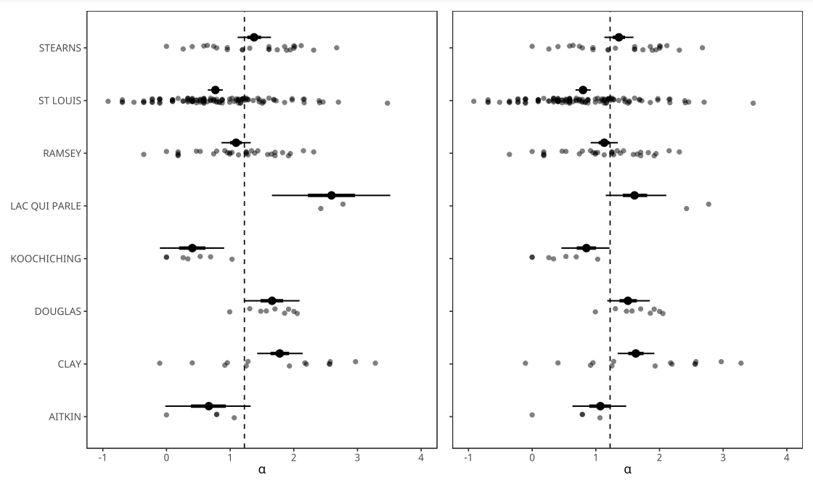
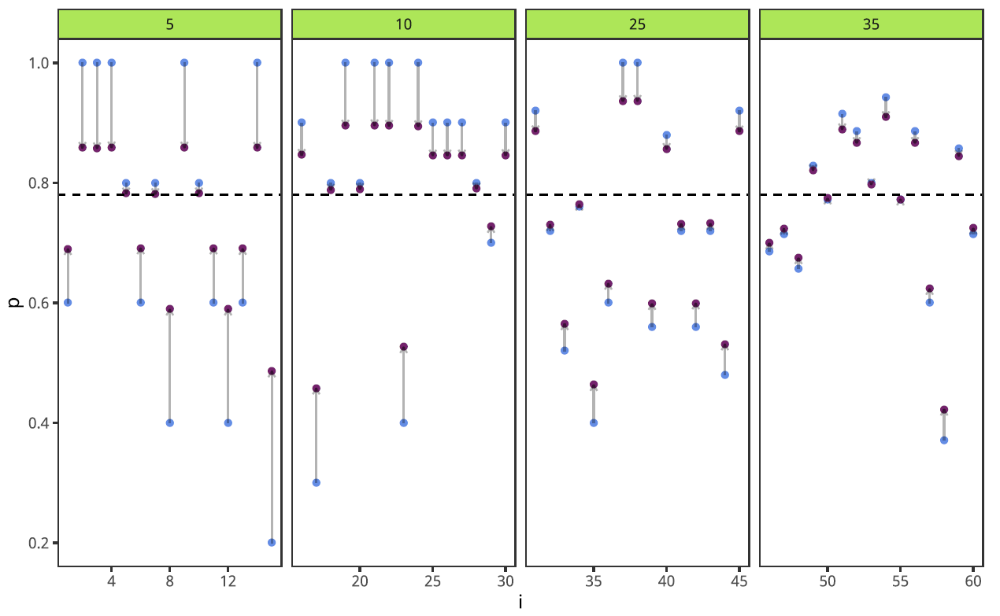

Modelos Jerárquicos
Introducción
Consideremos el siguiente modelo: \[ \begin{align*} y\mid\pi & \sim \mathrm{Bi}(N_i,\pi)\\ \pi & \sim Beta(a,b) \end{align*} \]
Sabemos (gracias al TP2) que la función de densidad de la distribución beta se puede expresar en términos de su moda \(\omega\) y su concentración \(\kappa\)
\[ \begin{align*} y\mid\pi & \sim \mathrm{Bi}(N,\pi)\\ \pi & \sim Beta(\omega(\kappa-2)+1,\ (1-\omega)(\kappa-2)+1) \end{align*} \]
El valor de \(\pi\) depende del valor de \(\omega\). Lo sabíamos, después de todo, \(\omega\) y \(\kappa\) son las constantes de ajuste del prior o hiperparámetros. \(\kappa\) refleja el grado de credibilidad a priori sobre los valores de \(\pi\) (alrededor de \(\omega\)).
¿Qué pasa si \(\omega\) no es fijo sino otro parámetro a estimar?
En el contexto de una moneda: \(\pi\) es la probabilidad de cara de la moneda y \(\omega\) es el valor de probabilidad de cara al que el fabricante de monedas le apunta en la construcción. \(\kappa\) (fijo y conocido) es una medida de la dispersión que tiene el proceso de fabricación (de lo consistente que es este proceso) o, en otros términos, mide el grado de asociación entre \(\pi\) y \(\omega\).
¿Qué necesitamos para \(\omega\)? Digamos que, a priori, \(\omega \sim \mathrm{Beta}(A_\omega,B_\omega)\)
\[ \begin{align*} y\mid\pi & \sim \mathrm{Bi}(N,\pi)\\ \pi \mid \omega & \sim \mathrm{Beta}(\omega(\kappa-2)+1,\ (1-\omega)(\kappa-2)+1) \\ \omega & \sim \mathrm{Beta}(A_\omega,B_\omega) \end{align*} \]
¿Cuántos parámetros tiene este modelo?
Es un modelo de dos parámetros (hay una distribución conjunta a priori y una distribución conjunta a posteriori) pero no como el \(\mu\) y el \(\sigma\) de una distribución normal o el \(\beta_0\) y \(\beta_1\) de un modelo de regresión lineal…
¿Cómo funciona el modelo hacia adelante? \(\omega \rightarrow \pi \rightarrow y\) (\(\omega\) influye en el valor de \(y\) solo a través de \(\pi\))
¿Y el razonamiento inverso? De \(N\) tiradas podemos hacer una inferencia sobre \(\pi\), lo que nos permitirá hacer una inferencia sobre \(\omega\)
¿Qué distribución a posteriori buscamos? \(p(\pi,\omega\mid y)\)
¿Y la Regla de Bayes? ¿Vale? ¿Cómo la escribimos?
\[p(\pi,\omega\mid y) = \frac{p(y\mid\pi,\omega)p(\pi,\omega)}{p(y)} = \frac{p(y\mid\pi)p(\pi\mid\omega)p(\omega)}{p(y)}\]
¿Tenemos forma de expresar \(p(y\mid\pi)\), \(p(\pi\mid\omega)\), y \(p(\omega)\)?
Estamos haciendo inferencia bayesiana sobre una distribución conjunta (de \(\pi\) y \(\omega\)). Pero la relación entre los parámetros (y la función de verosimilitud) es jerárquica. La jerarquía tiene una interpretación para el modelo.
prior <- expand.grid(pi = pi, omega = omega) |>
mutate(p_omega = dbeta(omega, A_omega, B_omega),
p_pi_given_omega = dbeta(pi, omega*(kappa-2)+1, (1-omega)*(kappa-2)+1),
prior = p_pi_given_omega * p_omega)
plot_prior <- ggplot(prior) +
geom_raster(aes(x=pi, y=omega, fill=prior)) +
geom_hline(yintercept = 0.6) +
geom_hline(yintercept = 0.9) +
scale_x_continuous(expression(pi), expand = c(0,0)) +
scale_y_continuous(expression(omega), expand = c(0,0)) +
viridis::scale_fill_viridis()
plot_prior_omega <- ggplot(prior) +
geom_line(aes(x=omega, y=p_omega))
plot_prior_pi_omega1 <- ggplot(prior |> filter(omega == 0.6)) +
geom_line(aes(x=pi, y=prior)) +
xlab(expression(pi))
plot_prior_pi_omega2 <- ggplot(prior |> filter(omega == 0.9)) +
geom_line(aes(x=pi, y=prior)) +
xlab(expression(pi))likelihood <- expand.grid(pi = pi, omega = omega) |>
mutate(likelihood = dbinom(y, size = N, prob = pi))
plot_likelihood <- ggplot(likelihood) +
geom_raster(aes(x=pi, y=omega, fill=likelihood)) +
scale_x_continuous(expression(pi), expand = c(0,0)) +
scale_y_continuous(expression(omega), expand = c(0,0)) +
viridis::scale_fill_viridis()
posterior <- inner_join(prior,likelihood) |>
mutate(posterior = prior * likelihood)
plot_posterior <- ggplot(posterior) +
geom_raster(aes(x=pi, y=omega, fill=posterior)) +
scale_x_continuous(expression(pi), expand = c(0,0)) +
scale_y_continuous(expression(omega), expand = c(0,0)) +
viridis::scale_fill_viridis()La inferencia bayesiana en un modelo jerárquico es inferencia en el espacio de la distribución conjunta de los parámetros pero reformulando la distribución conjunta en términos jerárquicos: se refactoriza \(p(\pi,\omega)\) como \(p(\pi\mid\omega)p(\omega)\)
Extensión
¿Qué pasaría si contamos con más de una moneda creada por la misma fábrica? Cada moneda tiene un valor de \(\pi_s\) que es propio y que a su vez tienen algo en común: provienen de la fábrica que tiene parámetro \(\omega\).
Con \(y_1\) caras en \(N_1\) tiradas de la moneda 1 estimamos \(\pi_1\), con \(y_2\) caras en \(N_2\) tiradas de la moneda 1 estimamos \(\pi_2\)… y luego, con todas las tiradas, podemos estimar \(\omega\).
Consideremos un caso real. \(S\) personas reciben una droga y son sometidos a un test de memoria. La probabilidad de que el sujeto \(s\) recuerde un ítem que se le muestra es \(\pi_s\). El sujeto \(s\) recuerda \(y_s\) ítems de \(N_s\) que se le presentan. Asumimos que la droga induce un efecto en los sujetos alrededor de una tendencia central \(\omega\).
Consideremos por simplicidad que se tienen dos sujetos…
¿Cuántos parámetros tiene el modelo? ¿Cómo podemos representar la relación entre los \(\theta_s\)?
\[ \begin{align*} y_s\mid\pi_s & \sim \mathrm{Bi}(N_s,\pi_s)\\ \pi_s \mid \omega & \sim \mathrm{Beta}(\omega(\kappa-2)+1,\ (1-\omega)(\kappa-2)+1) \\ \omega & \sim \mathrm{Beta}(A_\omega,B_\omega) \end{align*} \]
Si fijo \(\omega\), los valores de los \(\pi_s\) son independientes: \(\pi_1\) y \(\pi_2\) son independientes dado \(\omega\).
La probabilidad a priori que es \(p(\pi_1,\pi_2,\omega)\) ahora puede factorizarse como \(p(\pi_1,\pi_2\mid \omega) p(\omega) = p(\pi_1\mid \omega) p(\pi_2\mid \omega) p(\omega)\)
prior <- expand.grid(pi_1 = pi_1, pi_2 = pi_2, omega = omega) |>
mutate(
p_omega = dbeta(omega, A_omega, B_omega),
p_pi1_given_omega = dbeta(pi_1,
omega*(kappa-2)+1,
(1-omega)*(kappa-2)+1),
p_pi2_given_omega = dbeta(pi_2,
omega*(kappa-2)+1,
(1-omega)*(kappa-2)+1),
prior = p_pi1_given_omega * p_pi2_given_omega * p_omega)
prior_pi1 <- ggplot(prior |>
group_by(pi_1,omega) |>
summarise(prior = sum(prior))) +
geom_raster(aes(x=pi_1, y=omega, fill=prior)) +
scale_x_continuous(expression(pi[1]), expand = c(0,0)) +
scale_y_continuous(expression(omega), expand = c(0,0)) +
viridis::scale_fill_viridis()
prior_pi2 <- ggplot(prior |>
group_by(pi_2,omega) |>
summarise(prior = sum(prior))) +
geom_raster(aes(x=pi_2, y=omega, fill=prior)) +
scale_x_continuous(expression(pi[2]), expand = c(0,0)) +
scale_y_continuous(expression(omega), expand = c(0,0)) +
viridis::scale_fill_viridis()likelihood <- expand.grid(pi_1 = pi_1, pi_2 = pi_2, omega = omega) |>
mutate(likelihood_pi1 = dbinom(y_1, size = N_1, prob = pi_1),
likelihood_pi2 = dbinom(y_2, size = N_2, prob = pi_2),
likelihood = likelihood_pi1 * likelihood_pi2)
likelihood1 <- ggplot(likelihood |>
group_by(pi_1,omega) |>
summarise(likelihood = sum(likelihood))) +
geom_raster(aes(x=pi_1, y=omega, fill=likelihood)) +
scale_x_continuous(expression(pi[1]), expand = c(0,0)) +
scale_y_continuous(expression(omega), expand = c(0,0)) +
viridis::scale_fill_viridis()
likelihood2 <- ggplot(likelihood |>
group_by(pi_2,omega) |>
summarise(likelihood = sum(likelihood))) +
geom_raster(aes(x=pi_2, y=omega, fill=likelihood)) +
scale_x_continuous(expression(pi[2]), expand = c(0,0)) +
scale_y_continuous(expression(omega), expand = c(0,0)) +
viridis::scale_fill_viridis()
posterior <- inner_join(prior, likelihood) |>
mutate(posterior = prior * likelihood)
posterior_pi1 <- ggplot(posterior |>
group_by(pi_1,omega) |>
summarise(posterior = sum(posterior))) +
geom_raster(aes(x=pi_1, y=omega, fill=posterior)) +
scale_x_continuous(expression(pi[1]), expand = c(0,0)) +
scale_y_continuous(expression(omega), expand = c(0,0)) +
viridis::scale_fill_viridis()
posterior_pi2 <- ggplot(posterior |>
group_by(pi_2,omega) |>
summarise(posterior = sum(posterior))) +
geom_raster(aes(x=pi_2, y=omega, fill=posterior)) +
scale_x_continuous(expression(pi[2]), expand = c(0,0)) +
scale_y_continuous(expression(omega), expand = c(0,0)) +
viridis::scale_fill_viridis()
posterior_omega <- ggplot(posterior |>
group_by(omega) |>
summarise(posterior = sum(posterior))) +
geom_line(aes(x=omega, y=posterior)) +
xlab(expression(omega))
posterior_pi1_marg <- ggplot(posterior |>
group_by(pi_1) |>
summarise(posterior = sum(posterior))) +
geom_line(aes(x=pi_1, y=posterior)) +
xlab(expression(pi[1]))
posterior_pi2_marg <- ggplot(posterior |>
group_by(pi_2) |>
summarise(posterior = sum(posterior))) +
geom_line(aes(x=pi_2, y=posterior)) +
xlab(expression(pi[2]))- La función de verosimilitud no depende de \(\omega\)
- La función de verosimilitud es más estrecha para el sujeto 1 que para el sujeto 2
- El posterior marginal de \(\pi_1\) está cerca de la proporción muestral
- El posterior marginal de \(\pi_2\) está cerca de la proporción muestral
- El posterior marginal de \(\pi_1\) tiene menos incertidumbre que el de \(\pi_2\)
¿Qué ocurre si se cambia el valor de \(\kappa\)?
El posterior marginal de \(\pi_2\) se alejó de la proporción muestral. El sujeto 1 tenía un tamaño de muestra mayor (más evidencia) y por lo tanto influyó más en la estimación de \(\omega\), lo que a la vez influye en la estimación de \(\pi_2\).
Shrinkage
La estructura jerárquica de los modelos hace que las estimaciones de los parámetros de los niveles más bajos se acerquen más de lo que lo harían si no hubiera una distribución en un nivel superior. Esto es lo que se conoce como shrinkage de las estimaciones.
Las estimaciones de los parámetros de los niveles más bajos son tiradas (pulled) o se estrechan o tienden a concentrarse hacia la moda de la distribución superior.
El shrinkage ocurre porque los parámetros de los niveles bajos (los \(\pi_s\)) son influenciados por:
- El conjunto de datos que dependen directamente de ese parámetro
- Los parámetros de niveles más altos de los cuales dependen los parámetros de niveles más bajos (¡y que son afectados por todos los datos!)
Por ejemplo, sobre \(\pi_1\) influyen \(y_1\) y \(N_1\) pero también \(\omega\) (cuya estimación depende de \(\pi_2\) y \(N_2\)).
Nota: el shrinkage es consecuencia exclusivamente de la estructura jerárquica (y no de la inferencia bayesiana). Existe en la teoría clásica de estimación (ver estimador de James-Stein)
Otro ejemplo
El radón es un gas radioactivo y cancerígeno. Los productos de la desintegración del radón son también radioactivos y en altas concentraciones se sabe que producen cáncer de pulmón. Trabajaremos con datos de mediciones de radón en el estado de Minnesota. Se cuenta con mediciones en hogares de diferentes condados dentro del estado.
- \(i\) es el índice de los hogares
- \(Y_i\) es el nivel de radón (log radón) del hogar \(i\)
- \(j\) (entre \(1\) y \(J\)) es el índice de los condados
- \(j[i] = \mathrm{county}[i]\) es el condado al que pertenece el hogar \(i\)
Complete pooling
\[ \begin{align*} Y_i\mid\mu_i,\sigma & \sim \mathcal{N}(\mu_i,\sigma^2) \\ \mu_i & = \alpha \\ \alpha & \sim P(\alpha) \\ \sigma & \sim P(\sigma) \end{align*} \]
Hay una única media \(\alpha\) común para todos los \(i\), independientemente del grupo \(j\) al que pertenezcan
No pooling
\[ \begin{align*} Y_i\mid\mu_i,\sigma & \sim \mathcal{N}(\mu_i,\sigma^2)\\ \mu_i & = \alpha_{j[i]} \\ \alpha_j & \sim P(\alpha_j) \\ \sigma & \sim P(\sigma) \end{align*} \]
Decimos que los \(Y_i\) tienen distribución de media \(\alpha_{j[i]}\), sin imponer ninguna restricción sobre los \(\alpha_j\). \(P(\alpha_j)\) es una distribución no informativa (muy ancha y chata). Todos los \(\alpha_j\) son independientes. Coincide con la estimación clásica que incluye una variable dummy para cada grupo.
Podemos mejorar el modelo anterior incorporando un prior que regularice los \(\alpha_j\)
\[\begin{align*} Y_i\mid\mu_i,\sigma & \sim \mathcal{N}(\mu_i,\sigma^2) \\ \mu_i & = \alpha_{j[i]} \\ \alpha_j & \sim \mathcal{N}(0,10) \\ \sigma & \sim P(\sigma) \end{align*}\]
0 y 10 son valores arbitrarios para la media y la varianza de la distribución a priori de los \(\alpha_j\). Los \(\alpha_j\) dejan de poder ser estimados libremente. Hay regularización y tendemos a evitar el overfitting. Hay un partial pooling. Si en lugar de 10 se elige un valor más grande, tendemos a no pooling; si se elige un valor más chico, tendemos a pooling completo
Mejor aún, podemos estimar el grado de regularización partir de los datos. ¿Cuánto pooling es necesario? Se estima a partir de los datos…
\[\begin{align*} Y_i\mid\mu_i,\sigma & \sim \mathcal{N}(\mu_i,\sigma^2) \\ \mu_i & = \alpha_{j[i]} \\ \alpha_j & \sim \mathcal{N}(\mu_\alpha,\sigma_\alpha^2) \\ \sigma & \sim P(\sigma) \\ \mu_\alpha & \sim P(\mu_\alpha) \\ \sigma_\alpha & \sim P(\sigma_\alpha) \\ \end{align*}\]
\(\mu_\alpha\) y \(\sigma_\alpha\) son hiperparámetros (parámetros de la distribución de a priori de los parámetros) y por lo tanto tienen hiperpriors
El chiste es que todos los datos se usan para estimar \(\mu_\alpha\) y \(\sigma_\alpha\) y por lo tanto en la estimación de cada \(\alpha_j\) hay información de todos los datos. La regularización es adaptativa (se aprende de los datos).
Shrinkage
- Siempre que hay regularización, hay shrinkage de parámetros.
- Los datos de un grupo ayudan en la estimación de los parámetros de los otros grupos (partial pooling: préstamo de información).
- Así, los grupos que tienen menor tamaño de muestra toman más información del resto de los grupos y el shrinkage es más intenso.
- Pooling completo: hay una única media para todos los individuos, independientemente del grupo. La variación entre los grupos es cero. Underfitting.
- No pooling: cada grupo tiene una media independiente de la de los demás. La variación entre los grupos es infinita. No se comparte información entre los grupos, lo que se sabe de un grupo no ayuda a inferir sobre los demás. Overfitting.
- Partial pooling: cada grupo tiene una media pero todas las medias están conectadas. Es una solución de compromiso, un punto medio entre pooling completo y no pooling.
Para algunos condados: a la izquierda está la estimación de la media no pooling de la media, a la derecha la estimación del modelo multinivel (pooling parcial). En línea de trazos el pooling completo.
Otro ejemplo
Corredores que han participado varias veces de una famosa maratón en Washington. Se registraron los tiempos de los participantes.
- La información de la estimación de la pendiente de un grupo es útil para estimar las otras pendientes
- La información de la estimación de las ordenadas al origen de un grupo es útil para estimar las otras ordenadas al origen
- Las pendientes y las ordenadas al origen trabajan de forma conjunta para describir a un corredor, covarían
\[\begin{align*} Y_i \mid \mu_i,\sigma & \sim \mathcal{N}(\mu_i,\sigma^2) \\ \mu_i & = \alpha_{j[i]} + \beta_{j[i]} x_i \\ \left[\begin{array}{c}\alpha_j\\\beta_j\end{array}\right] & \sim \mathcal{N}\left(\left[\begin{array}{c}\mu_\alpha\\\mu_\beta\end{array}\right],\Sigma\right) \end{align*}\]
\(\left[\begin{array}{c}\alpha_j\\\beta_j\end{array}\right]\) tienen una distribución conjunta, normal multivariada de hiperparámetros \(\left[\begin{array}{c}\mu_\alpha\\\mu_\beta\end{array}\right]\) y \(\Sigma\). ¡Necesitan !
\(\Sigma\) puede factorizarse según:
\[ \Sigma = \left( \begin{array}{cc} \sigma_\alpha^2 & \sigma_\alpha\sigma_\beta\rho \\ \sigma_\alpha\sigma_\beta\rho & \sigma_\beta^2 \end{array}\right) = \left( \begin{array}{cc} \sigma_\alpha & 0 \\ 0 & \sigma_\beta \end{array}\right) \left( \begin{array}{cc} 1 & \rho \\ \rho & 1 \end{array}\right) \left( \begin{array}{cc} \sigma_\alpha & 0 \\ 0 & \sigma_\beta \end{array}\right) \]
Llamando \[R = \left( \begin{array}{cc} 1 & \rho \\ \rho & 1 \end{array}\right)\] solo habría que definir una distribución para \(\sigma_\alpha\), \(\sigma_\beta\) y \(R\) (o \(\rho\))
No es solo para modelos lineales… Se tienen 60 tanques con ranitas de la especie Hyperolius viridiflavus. Cada tanque \(i\) de ellos contiene una cantidad inicial de renacuajos \(N_i\). Al cabo de unas semanas se observa el número \(S_i\) de renacuajos que sobrevivieron en el tanque \(i\).
Se modeliza la probabilidad de supervivencia de cada tanque con una regresión logística:
\[\begin{align*} S_i \mid p_i & \sim Binomial(N_i,p_i) \\ \log\left( \frac{p_i}{1-p_i} \right) & = \alpha_{i} \\ \alpha_i & \sim \mathcal{N}(\mu_\alpha,\sigma_\alpha^2) \end{align*}\]
Observar que no hay grupos (no hay índice \(j\)), simplemente hacemos de los individuos.
Comparamos la estimación de \(p_i = \frac{e^{\alpha_i}}{1+e^{\alpha_i}}\) con la obtenida por máxima verosimilitud en cada tanque: \(p_{i,ML} = \frac{S_i}{N_i}\)
Intercambiabilidad
Si no existe otra información más que los datos observados \(y_i\) para distinguir a los individuos \(i\) y estos no pueden ordenarse ninguna manera entonces se puede asumir una simetría de los parámetros. Se dice que los parámetros \(\theta_i\) son intercambiables (exchangeable).
Si las observaciones pueden agruparse y los grupos son indistinguibles (con características propias desconocidas) con propiedades/particularidades ignoradas entonces los grupos son intercambiables y los individuos, parcialmente o condicionalmente intercambiables.
Distribuciones predictivas
En los modelos jerárquicos hay dos tipos de distribuciones predictivas a posteriori:
- Predicciones para individuos que pertenecen a grupos ya existentes (tiradas de la moneda con la que se realizaron las inferencias, otra tarea de memoria para un individuo que ya participó del experimento)
- Predicciones para individuos pertenecientes a grupos nuevos (tiradas de una nueva moneda de la fábrica, cómo afectaría la droga a un individuo nuevo)
Resumen
- Los modelos jerárquicos resultan atractivos para problemas en los cuales los parámetros se pueden considerar vinculados de cierta forma, por ejemplo en grupos.
- Los modelos jerárquicos o multinivel son extensiones de los modelos lineales (y de los modelos lineales generalizados) para datos que tienen algún grado de agrupamiento y en los cuales se permite que los parámetros varíen por grupo
- Los modelos multinivel permiten mejorar las inferencias en contextos donde la muestra es pequeña. Si un individuo que tiene pocas observaciones pertenece a un determinado grupo, se supone que compartirá características con otros individuos de ese grupo y por lo tanto la estimación de sus parámetros podrá ser informada por la de sus pares.
Estadística Bayesiana – 2023